如下图所示：MDI系统标准BASIC M面板
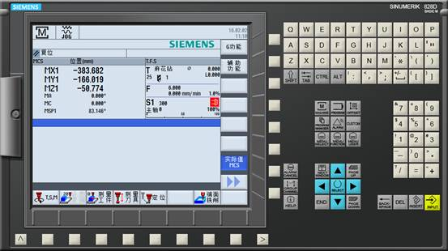
机床操作面板
如下图所示：828D M标准操作面板
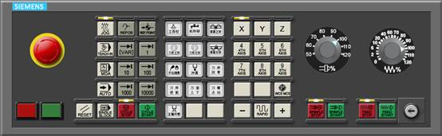
数字 / 字母键用于输入数据到输入区（如下图所示），系统自动判别取字母还是取数字。


返回键。
菜单扩展键。

上档键。
控制键。

ALT键。
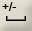
空格键。
删除键(退格键)。
删除键。
插入键。
制表键。
回车/输入键。
加工操作区域键。
程序操作区域键。
参数操作区域键。
程序管理操作区域键。
翻页键。
光标键。
选择/转换键
开机
操作步骤：
打开机床电源开关 ，释放急停按钮，之后打开主轴启动
，释放急停按钮，之后打开主轴启动 、进给启动。
、进给启动。
回参考点
此系统由于采用的是绝对式编码器，可以不进行回参考点操作，如需回参考点，在JOG模式下按，按轴键、、，再按方向键进行回参考点。
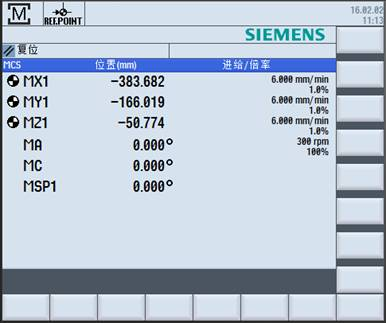
“JOG”运行方式 (“加工”操作区)
功能
在JOG运行方式中,可以使坐标轴点动运行。
操作步骤
选择JOG运行方式
操作相应的方向键可以使坐标轴运行。如果同时按动相应的坐标轴键和“快进”键，则坐标轴以快进速度运行。
在选择“增量选择”以步进增量方式运行时，坐标轴以增量行使，步进量在屏幕上显示。
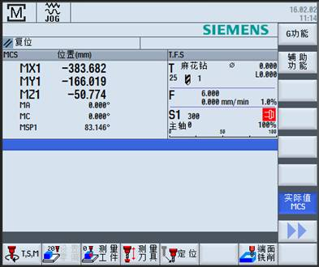
MDA运行方式(手动输入) (“加工”操作区)
功能
在MDA运行方式下可以编制一个零件程序段加以执行，但不能加工由多个程序段描述的轮廓。
操作步骤
选择机床操作面板上的MDA键。
通过操作面板输入程序段。
按动数控启动键执行输入的程序段。
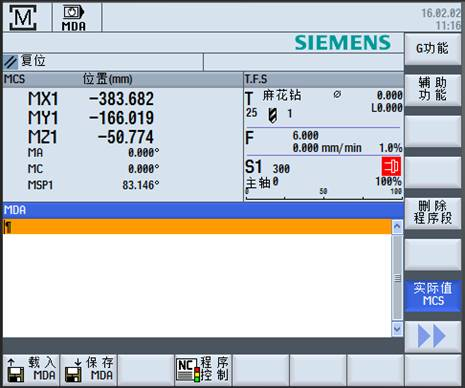
建立新刀具
操作步骤
按“OFFSET”键，然后按“新刀具”菜单,建立一个新刀具。
出现输入窗口,显示所有给定的刀具号。
选择新的T-号，并选择刀具具体类型，铣刀（100-199）、钻头（200-299）、特种刀具(700-800）。
按确定菜单
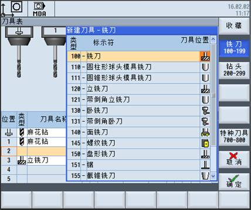
测量刀具
操作步骤
在JOG模式下，按“测量刀具”菜单
选择刀具T，按“设置长度”菜单进行计算，计算之后刀具数据会显示新的数值。
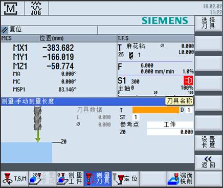
测量工件
操作步骤
在JOG模式下，按“测量工件”菜单，按菜单，
进入“选择零偏”菜单，设定G54-G57零偏，输入数据会显示新的数值。
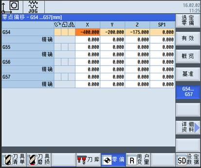
选择和启动零件程序 (“加工”操作区)
功能
启动程序之前必须要调整好系统和机床，保证安全。
操作步骤
在手动方式或者自动方式下按
在第一次选择“程序”操作区时会自动显示“零件程序和子程序目录”把光标定位到所选的程序上。
用“选择”键选择待加工的程序，被选择的程序名称显示在屏幕区“程序名”下。
如需要新建程序，按菜单，
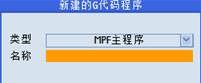
，可以输入新的程序名，类型分为MPF主程序、SPF子程序。输入程序名称后按
自动运行方式
功能
在自动方式下零件程序可以自动加工执行，这是零件加工中正常使用的方式。
操作步骤
按自动方式键选自动运行方式。
在编辑的模式下按菜单，系统会自动切换到AUTO模式下。
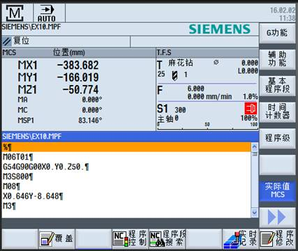
操作面板
SINUMERIK 828D M标准操作面板
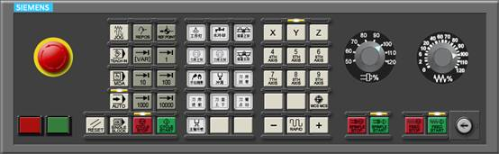
MDA :
用于直接通过操作面板输入数控程序和编辑程序。
AUTO ：
进入自动加工模式.
JOG ：
手动方式,手动连续移动台面或者刀具。
REFPOT :
VAR :
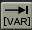
��量选择.SINGL :
自动加工模式中,单步运行.
刀库正转:
刀库正转.
刀库反转:
刀库反转.
RESET :
复位键.
CYCLESTAR :
循环启动.
CYCLESTOP :
方向键 :
、
紧急停止旋钮.

主轴速度调节旋钮.
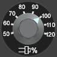
进给速度（F）调节旋钮.
沈阳机床厂828D T操作面板
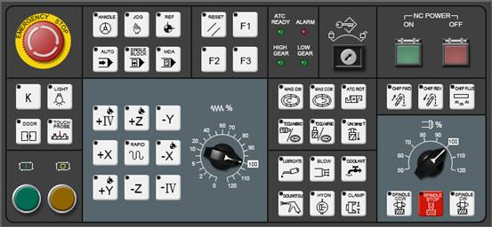
MDA:
用于直接通过操作面板输入数控程序和编辑程序。
自动 ：
进入自动加工模式.
手动 ：
手动方式,手动连续移动台面或者刀具。
回参考点 :
手动方式回参考点.
单段 :
自动单段运行.
主轴正转:
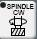
机床主轴正转.主轴反转:
机床主轴反转.
主轴停止:
机床主轴停止.
复位 :
复位键.
循环启动:
循环停止 :
方向键 :
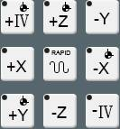
选择要移动的轴.紧急停止旋钮.
主轴速度调节旋钮.
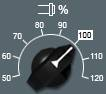
进给速度（F）调节旋钮.
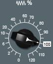